How deletion size affects the spatial sensitivity pattern. Top: global impact heatmap (position × size). Middle: insulation weakening heatmap. Bottom: rank of Jingyun's actual insulator at each deletion size.
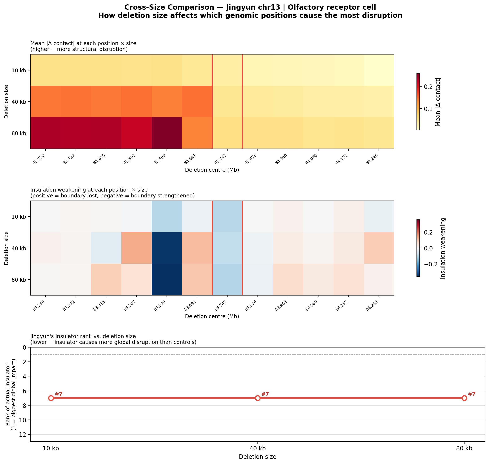
| Rank | Centre (bp) | Deletion range | Mean |Δ contact| | Cross-TAD gain | Ins. weakening |
|---|---|---|---|---|---|
| #1 | 83,230,227 | 83,230,227–83,240,227 | 0.05333 | -0.00247 | +0.00270 |
| #2 | 83,599,128 | 83,599,128–83,609,128 | 0.05309 | -0.02913 | -0.10158 |
| #3 | 83,322,452 | 83,322,452–83,332,452 | 0.05261 | -0.00418 | +0.00602 |
| #4 | 83,414,677 | 83,414,677–83,424,677 | 0.05182 | -0.01078 | +0.00462 |
| #5 | 83,506,903 | 83,506,903–83,516,903 | 0.05057 | -0.00035 | -0.00485 |
| #6 | 83,691,354 | 83,691,354–83,701,354 | 0.04237 | +0.02973 | -0.02031 |
| #7 | 83,742,467 | 83,742,467–83,752,467 | 0.03323 ⭐ ACTUAL | -0.02897 | -0.09955 |
| #8 | 83,875,805 | 83,875,805–83,885,805 | 0.02135 | +0.00827 | +0.00114 |
| #9 | 83,968,030 | 83,968,030–83,978,030 | 0.01930 | +0.01032 | +0.01655 |
| #10 | 84,060,256 | 84,060,256–84,070,256 | 0.01692 | +0.00689 | -0.00267 |
| #11 | 84,152,481 | 84,152,481–84,162,481 | 0.01373 | +0.00970 | +0.01703 |
| #12 | 84,244,707 | 84,244,707–84,254,707 | 0.00369 | +0.00694 | -0.02511 |
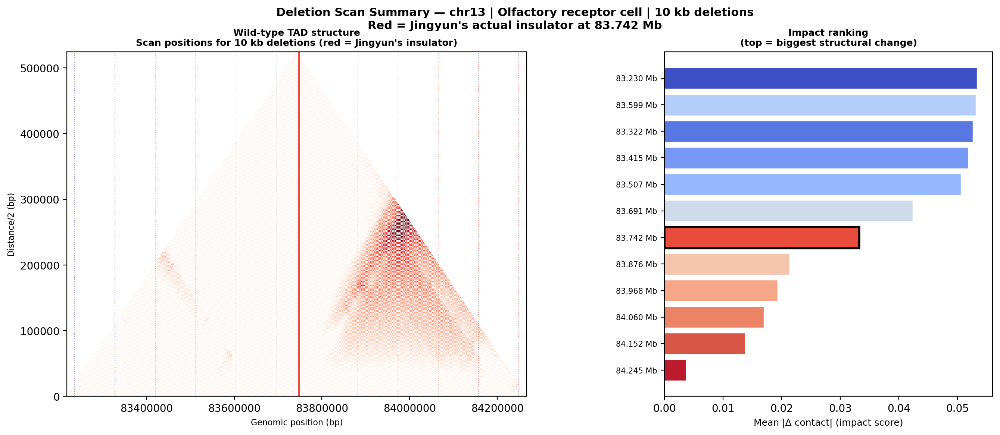
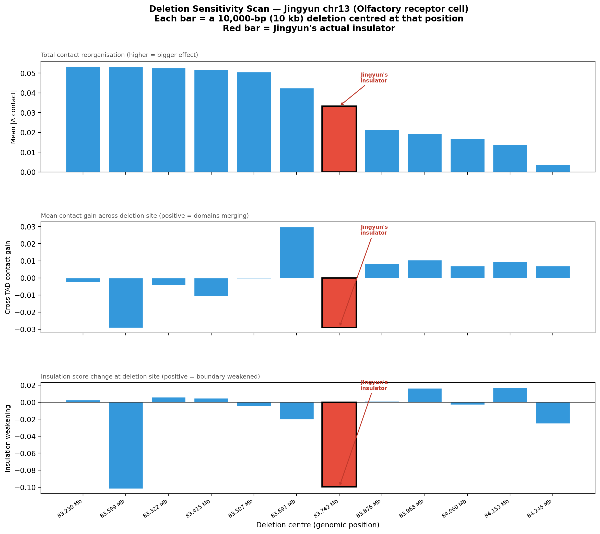
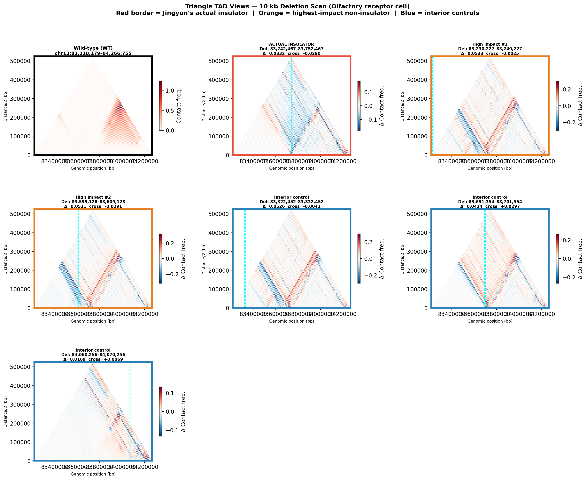
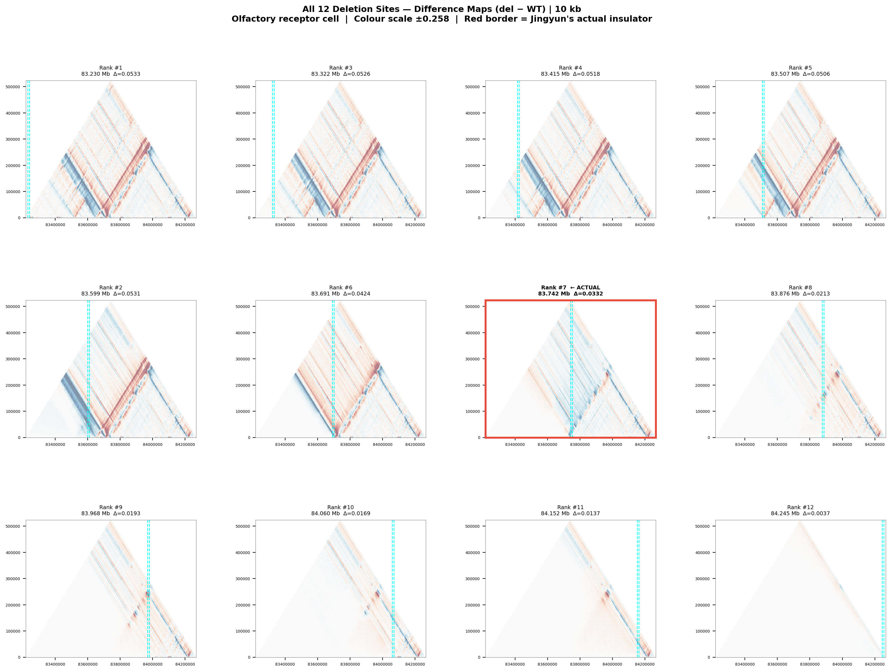
| Rank | Centre (bp) | Deletion range | Mean |Δ contact| | Cross-TAD gain | Ins. weakening |
|---|---|---|---|---|---|
| #1 | 83,680,445 | 83,680,445–83,720,445 | 0.14613 | +0.19116 | +0.11067 |
| #2 | 83,512,357 | 83,512,357–83,552,357 | 0.14610 | -0.03723 | +0.13144 |
| #3 | 83,344,270 | 83,344,270–83,384,270 | 0.14520 | -0.01787 | +0.00967 |
| #4 | 83,260,227 | 83,260,227–83,300,227 | 0.14317 | -0.01681 | +0.01636 |
| #5 | 83,428,314 | 83,428,314–83,468,314 | 0.14194 | -0.03958 | -0.03962 |
| #6 | 83,596,401 | 83,596,401–83,636,401 | 0.13791 | -0.04904 | -0.34382 |
| #7 | 83,742,467 | 83,742,467–83,782,467 | 0.04499 ⭐ ACTUAL | -0.02141 | -0.08644 |
| #8 | 83,848,532 | 83,848,532–83,888,532 | 0.03958 | +0.00551 | -0.01928 |
| #9 | 83,932,576 | 83,932,576–83,972,576 | 0.03688 | +0.00871 | +0.02710 |
| #10 | 84,016,619 | 84,016,619–84,056,619 | 0.03160 | -0.00617 | +0.01058 |
| #11 | 84,100,663 | 84,100,663–84,140,663 | 0.03075 | +0.00901 | +0.03123 |
| #12 | 84,184,707 | 84,184,707–84,224,707 | 0.02763 | +0.02209 | +0.08671 |
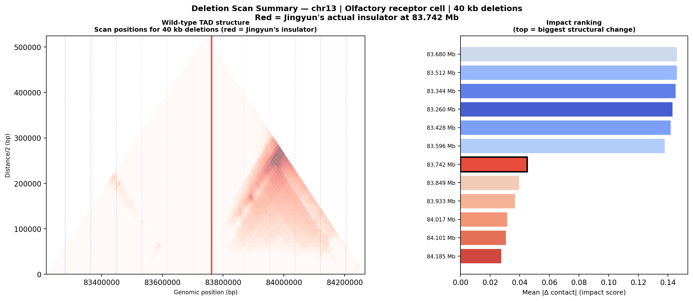
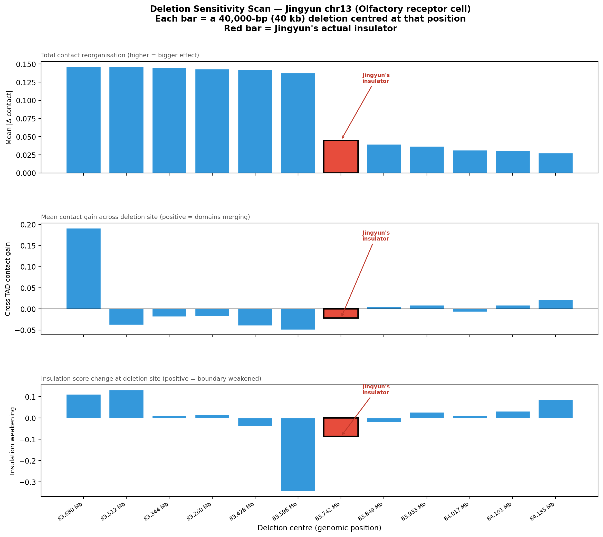
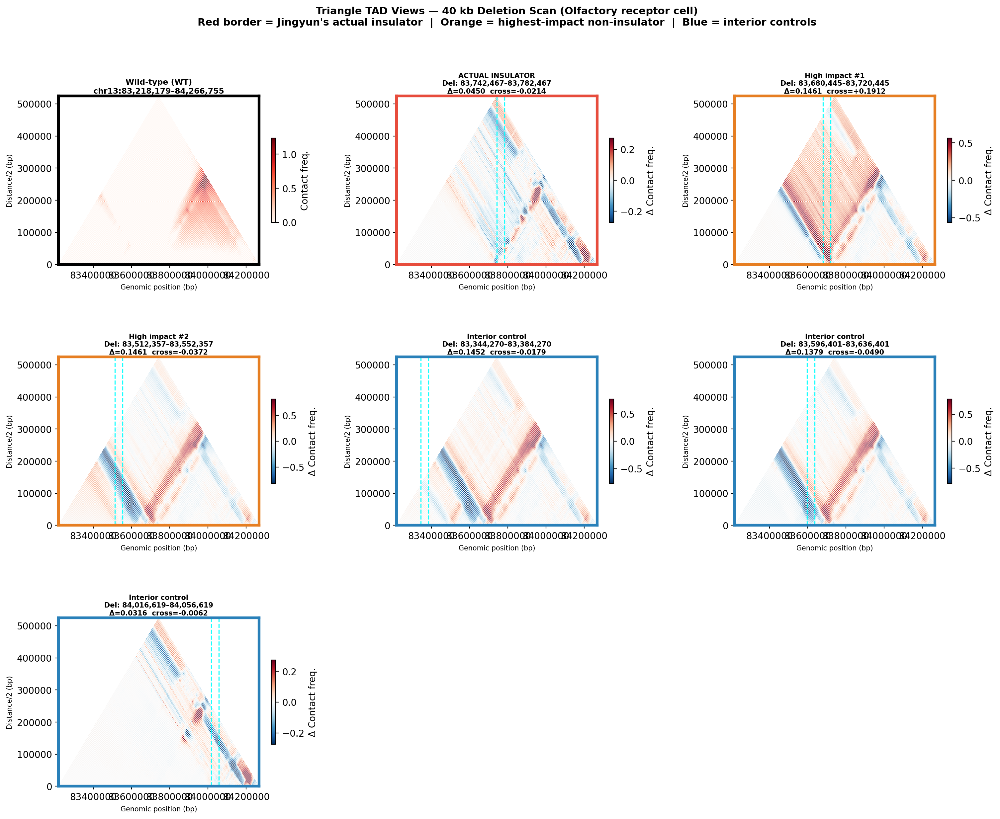
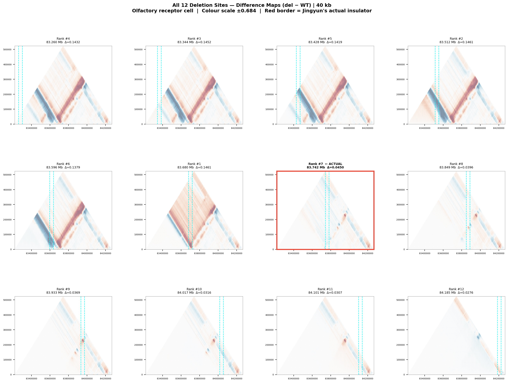
| Rank | Centre (bp) | Deletion range | Mean |Δ contact| | Cross-TAD gain | Ins. weakening |
|---|---|---|---|---|---|
| #1 | 83,592,765 | 83,592,765–83,672,765 | 0.25888 | +0.10366 | -0.37886 |
| #2 | 83,300,227 | 83,300,227–83,380,227 | 0.23479 | -0.03532 | +0.00339 |
| #3 | 83,446,496 | 83,446,496–83,526,496 | 0.23368 | -0.01324 | +0.08315 |
| #4 | 83,373,361 | 83,373,361–83,453,361 | 0.23209 | -0.04384 | +0.00828 |
| #5 | 83,519,630 | 83,519,630–83,599,630 | 0.21945 | -0.07588 | +0.04924 |
| #6 | 83,665,899 | 83,665,899–83,745,899 | 0.13567 | +0.15865 | +0.09610 |
| #7 | 83,742,467 | 83,742,467–83,822,467 | 0.05615 ⭐ ACTUAL | -0.01289 | -0.10249 |
| #8 | 83,885,303 | 83,885,303–83,965,303 | 0.05380 | +0.02198 | +0.06229 |
| #9 | 83,812,168 | 83,812,168–83,892,168 | 0.05372 | +0.01657 | -0.02178 |
| #10 | 84,031,572 | 84,031,572–84,111,572 | 0.04987 | +0.02600 | +0.05182 |
| #11 | 83,958,437 | 83,958,437–84,038,437 | 0.04662 | +0.00776 | +0.03242 |
| #12 | 84,104,707 | 84,104,707–84,184,707 | 0.04463 | +0.01588 | +0.01621 |
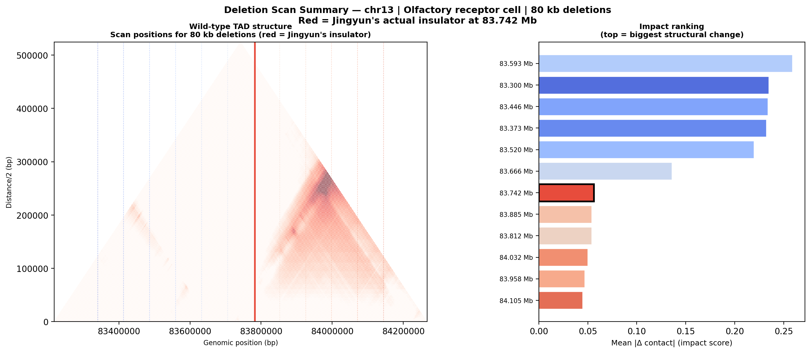
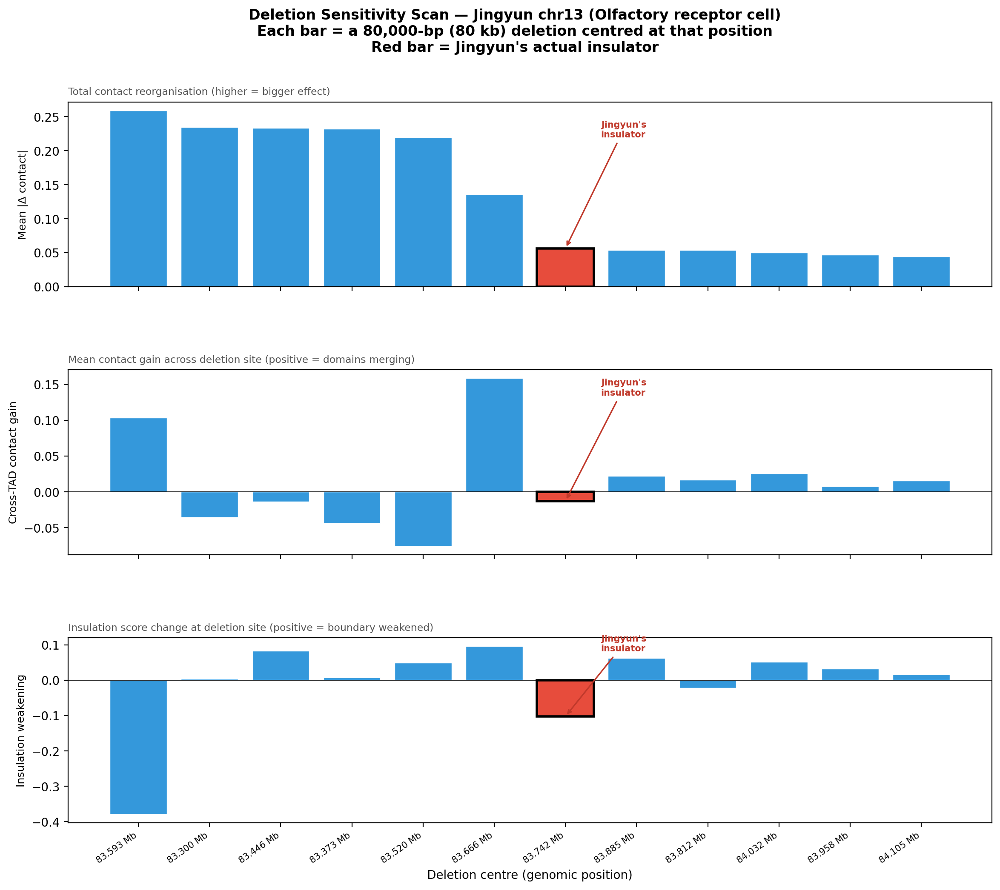
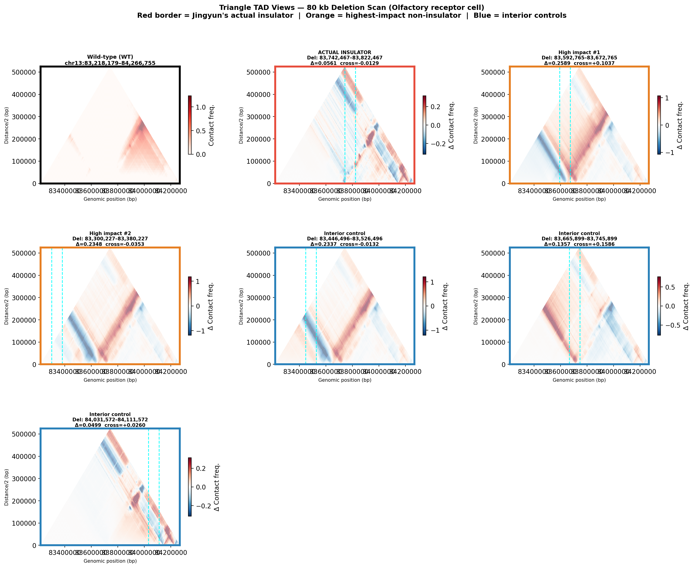
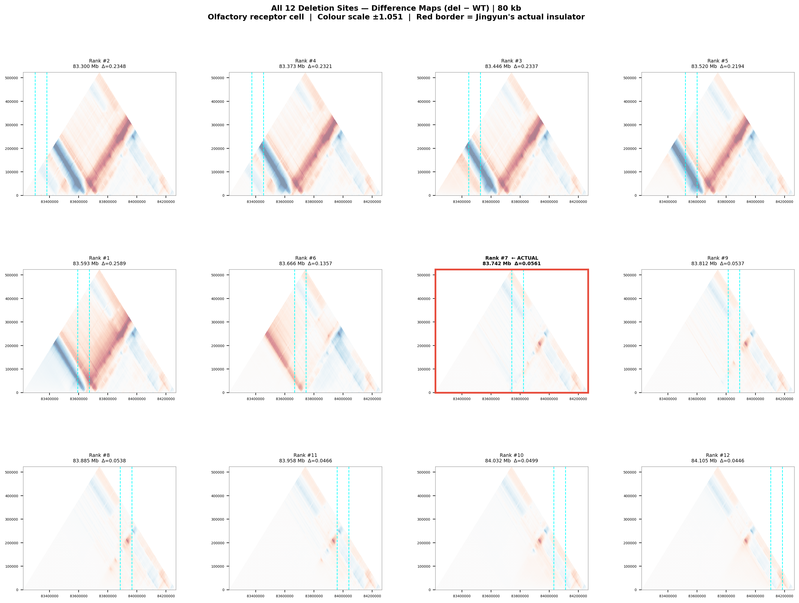